Four giants, tier by tier
The conifers student, writing the day after. The study ran one night, Friday 25 September 2026, from 23:00 to about 01:30: 2 h 24 min of my own working time, 223 steps, 91 images looked at. Images numbered nbNNN are ones I opened while working, numbered as in the notebook. Several were overwritten on disk later, so the notebook is the only place they survive. Images named t… were made today by code/figs.py with the study's own painter, to show things I only half-saw that night. What I learned, shaped for teaching, is in TUTORIAL.md.
The brief: learn to paint the great Pacific Northwest conifers — Douglas-fir, western hemlock, western redcedar and Sitka spruce — as individuals and as forest, in Mark Ferrari's pixel language. See how far a student can go past voxsim's existing trees, which David had called perfect. The subject list was specific: hemlock's drooping leader and weeping sprays, cedar's buttressed, fluted base and fanned sprays, old Douglas-fir's deep-furrowed bark and layered crown, and the stiff blue-green rainforest spruce. It had to be delivered as code with parameters, plus labelled sheets sweeping species × age × hour × distance × seed.
The short version. The best thing I made is a mixed stand at real heights, relit across four hours by nothing but a palette swap.

Sheet E: one index canvas, four palettes. The second critic called golden and dusk "the studio's best forest images".
The technique that made it work is one line of arithmetic. It came from a critic's first note, and I'd have missed it on my own for a long time: light the tops of the tiers, not the sun-side half of the tree. The things that didn't work are at the end: the iso forest, and two of the four barks.
1. Before painting: an hour of reading
I read before I touched a pixel, because the studio had done a lot of work already and I'd rather steal than rediscover.
The willow student (elements/willow/LESSONS.md and CRITIQUE.md) was the model I was pointed at. It went master copy, then a single bush in grey, then stems, leaves, colour and clumps. Two things from it shaped my night:
- The clump grammar. Foliage is a heap of lit-capped clumps, and the clumps are laid out as a light field, never painted directly.
- The critic's steer in its round 5: judge a leaf's form against photos of the plant, and use Ferrari only for craft. That's now the studio's rule. It freed me to stop copying his spruce once I'd learned its grammar.
SYNTHESIS.md had a line on conifers from master copy's C1: "1-px spire, drooping spurs lengthening downward, lit dabs on sun-side tips." The master-copy LESSONS gave numbers: a 1-px spire for about 4 rows, tiers every 4–5 rows, half-width about 1 + 0.15·d, 15–20% holes. The analysis student's material table had "conifer: black 61%, ochre fleck 22%, dark 14% — 3 colours cover 95%". The atelier student said their own trees were "clean sprites; his have dense, irregular needle texture with bronze light inside the mass". That last sentence was a warning I kept in front of me all night.
vox-trees (~/work/voxsim/crates/vox-trees/NOTES.md). I read it as the thing I had to beat and ended up borrowing from it:
- the opacity shadow map: foliage points binned in slices along the sun, so each point knows how much foliage lies between it and the sun, in O(1);
- designed LOD: each scale is designed, not shrunk;
- a "what didn't work" list. That told me the authors had already walked into the cage-shaped crown and the random-drop LOD, so I didn't.
The naturalists (~/work/naturalist/plants/02-trees.md, 05-old-growth.md) changed my trees more than any single technique. I found them only after my first species review. Real heights: mature 40–60 m, old 60–75 m. Mature Douglas-fir crowns fill the top third to half of the tree; old ones are "often only the top 10 to 20 m of a 60 to 70 m tree", with flat, broken tops. Cedar's branches "droop then sweep up at the tips in a J", with "multiple leaders and dead silver spike tops". Hex colours for each bark. And the single most useful sentence a painter could ask for: "Every hemlock's tip nods over like a bent fishing rod. This is the single fastest way to tell it from Douglas-fir at 100 m."
Ferrari. His only conifers in the Living Worlds files are in V16, the alpine tarn: subalpine spires at three distances, near, middle and far. The files are his index maps as JSON without quoted keys, so json.load failed on the first try:
json.decoder.JSONDecodeError: Expecting property name enclosed in double quotes: line 1 column 2 (char 1)
The willow student had already written the fix, so I copied their loader:
def load(name):
t = open(f"{REF}/{name}.json").read()
t = re.sub(r'([{,])\s*([A-Za-z_]+)\s*:', r'\1"\2":', t).replace("'", '"')
d = json.loads(t)
d["pal"] = np.array(d["colors"], dtype=np.uint8)
d["idx"] = np.array(d["pixels"], dtype=np.int32).reshape(d["height"], d["width"])
return d
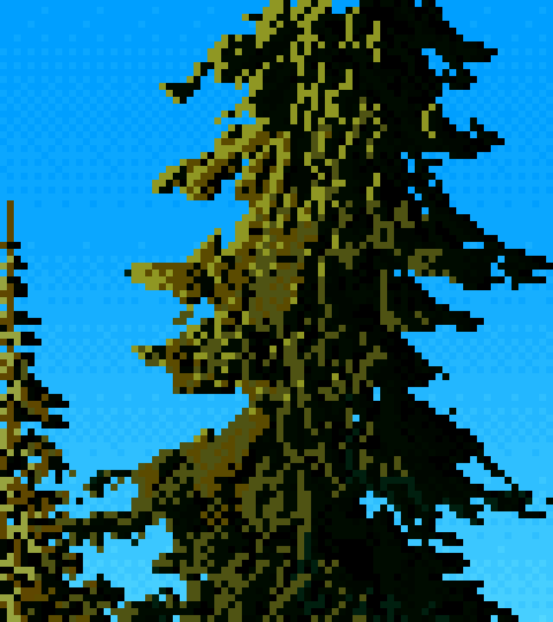
nb010. V16's near conifer at 10×: a black mass threaded with olive. The light is thin, on the top edges of drooping tiers, with short vertical strands hanging below it. I didn't see all of that yet. I saw "dark tree, olive speckle".
Photos. I fetched about 200 with the studio's imgfetch.py. The first batch was plain-English queries on Openverse: "western hemlock tree drooping leader", "western red cedar buttress trunk base", "old growth Douglas fir trunk bark", "Sitka spruce branches needles" and ten more. The second batch was the Latin names on Wikimedia Commons, which throttled me hard (HTTP Error 429: Too many requests). A later batch looked for whole trees: "lone Douglas fir tree", "old growth western red cedar tree", "western redcedar candelabra top". Keyword search misses a lot. The "Douglas fir tree crown" folder held an Arizona mountain range, a 1943 aerial photograph and, luckily, the best Sitka spruce photo I found. The ones I leaned on all night:


nb034, nb037. The Hoh hemlock against sky (the nodding top, the drooping tiers). An open-grown Sitka spruce (long limbs sweeping up at the tips, curtains of branchlets hanging beneath).
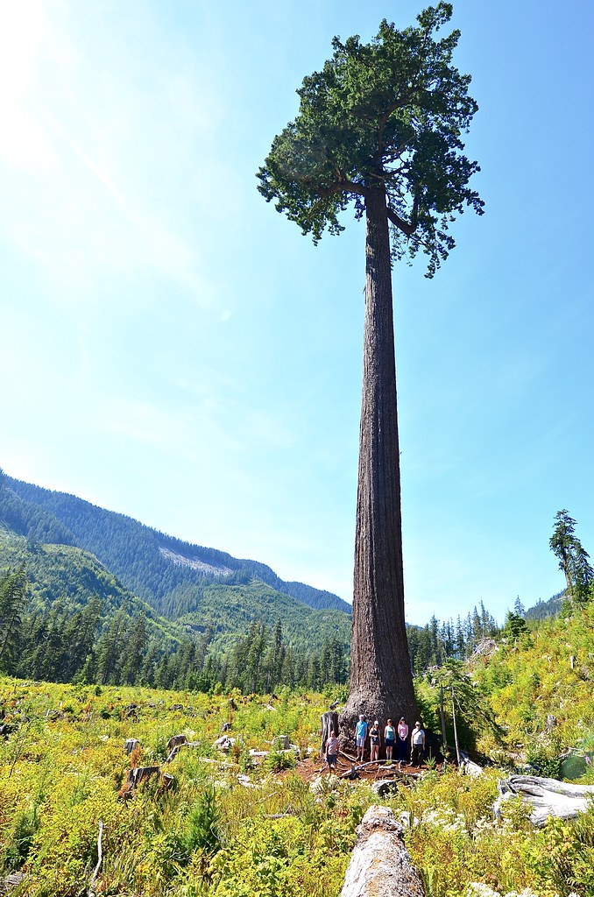
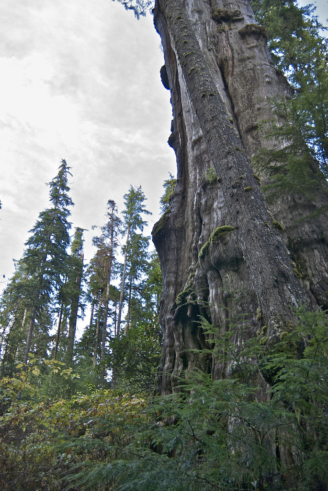
nb046, nb045. Big Lonely Doug: a 70 m pillar of furrowed bark with a small ragged crown on top. An ancient cedar: fluted, strip-barked, mossy, with young hemlocks behind.
2. Stage 0: the master copy, and what "a dark mass" means
I copied V16's mid-distance spire, native pixels (420,30)–(480,130), with a procedural tree rather than a traced map, so what I learned would transfer to other trees. The first model (tree.py, render.py, frozen now as the stage-0 regression) was the simplest thing I could think of:
- a trunk;
- branches in whorls, each a curve with a droop;
- foliage as points scattered in a pad along the outer part of each branch;
- each point lit from a blend of the crown's cone normal and its pad's own normal, with the opacity shadow map;
- each point drawn as a 1-px body pixel, with a subset drawn as short strokes.
The first render had a bug before it had a picture. I built each stroke's length as a scalar and indexed with it as if it were per-point:
IndexError: too many indices for array: array is 1-dimensional, but 2 were indexed
Printing the shapes of the stroke arrays gave (4, 79710) where I expected (79710,). The fix was slen = np.full(len(sx), ...).

nb022. The first four trees. They're olive shapes with an olive trunk (I'd put the foliage ramp on the bark), lit on the left, black on the right, in solid pads. That's everything wrong at once, but it drew.
Then the copy itself. c1_v1 was a bare pole with ticks, because my subalpine crown radius was 13% of height and Ferrari's is about 27%:

nb023. Ferrari at 8× on the left, my v1 on the right.
Rather than squint at the difference, I counted his pixels. stats.py bins his colour indices into four classes, then measures each class's share of the tree and its mean horizontal and vertical run length:
CLS = {'black': [62, 61, 60, 71], 'dgreen': [59, 72, 70], 'dolive': [73, 63, 55], 'lit': [58, 54]}
def runs(c, val):
L = []
for row in c:
m = (row == val).astype(int); d = np.diff(np.r_[0, m, 0])
L += list(np.flatnonzero(d == -1) - np.flatnonzero(d == 1))
return np.mean(L) if L else 0
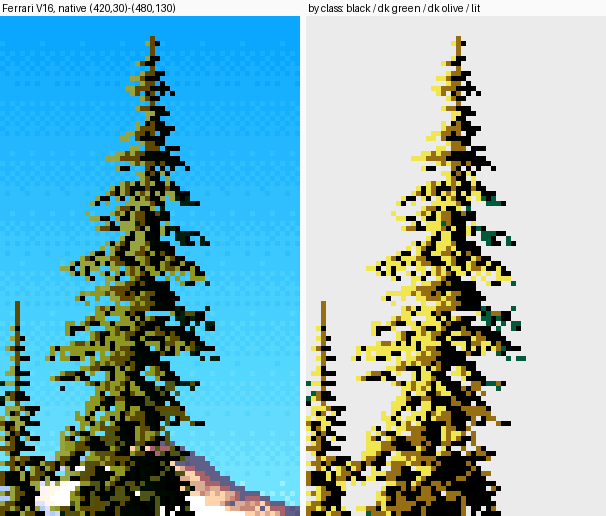
t1. Made today: his spire painted by class. Black, dark green, dark olive, lit.
ferrari black:0.47 (h2.2 v1.9) dgreen:0.03 (h1.3 v1.3) dolive:0.23 (h1.5 v1.5) lit:0.27 (h1.4 v1.5)
That one line told me more than the picture did. The tree is black with light on it: black is half the pixels, and the lit olive covers a quarter. Every class has runs of about 1.5 px. At mid distance his texture is a fine intermix of three very different values, and there's no patch of solid colour anywhere in it. Mine at v4:
mine black:0.49 (h4.1 v3.4) dgreen:0.00 dolive:0.14 (h1.6 v1.5) lit:0.37 (h3.7 v2.7)
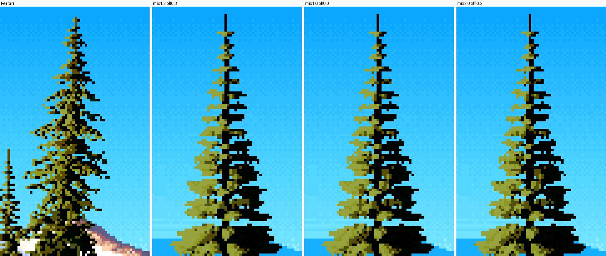
Stage-0 v4 (from the study folder). The shares are close, but lit runs are 3.7 px against his 1.4. It reads as cut-paper pads.
My quantizer was a threshold with a small dither. Every pixel in a lit pad crossed the same threshold, so the pad came out as one solid olive shape. The fix was to throw the threshold away and draw every pixel from a three-way mixture — black, dark olive or lit — with probabilities set by how much light the point gets. The value is carried by the proportions, not by which side of a line a pixel falls on:
v = np.clip((d - thr) / lit_span, 0, 1) # direct light above the family boundary
pl = p_lit * v ** g_lit # P(lit olive)
pd = p_dol * (1 - 0.5 * v) * np.clip(v * 3 + 0.3, 0, 1) # P(dark olive)
s_lit = np.where(r < pl, 6 or 7, np.where(r < pl + pd, 4 or 5, 0)) # else black
(The real code is in the tutorial, and it's still the heart of the final painter.) Three tuning passes later the shares matched to within 0.03, and by v9 the lit runs were 1.7 px against his 1.4 (the black runs 2.3 against 2.2):
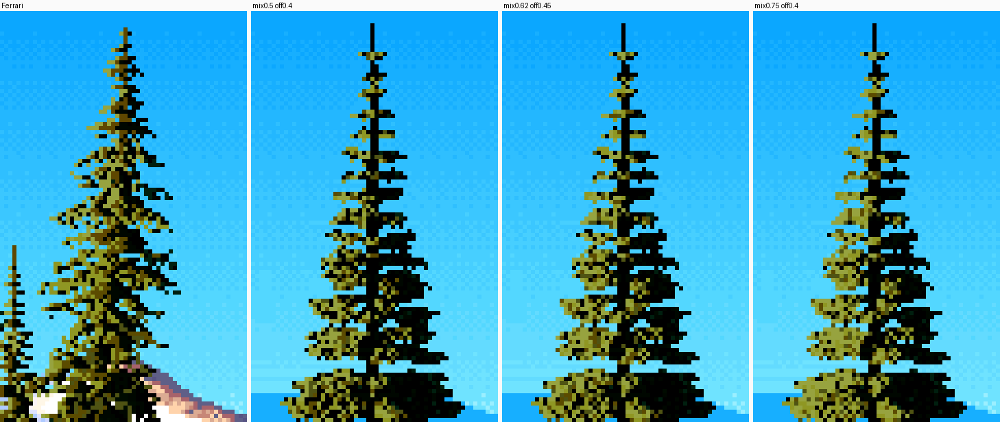
nb027. The mixture, three settings. The tiers are still horizontal bars, but the texture is his.
Then the silhouette. His tier edges end in spurs, the needled tip of each branch running out horizontally past the pad. Mine were round clouds. I added the twig axis of the outer half of each branch as its own line of foliage points (spur=2.0), made branch lengths ragged (len_jitter=0.35), made the spire concave (crown_pow 1.25), and put a 1-px needled leader on top:

nb032. Stage-0 v10. The silhouette and tier rhythm match at 1–2×; his tiers are more regular shelves.
I stopped the copy there, deliberately. At 8× his tiers are drooping shelves and his light is more continuous, but the goal was the grammar, not his tree. What I took away: a conifer at mid distance is a dark mass lit by a stochastic mixture, and spurs make its edge.
3. Stage 1: rebuilding the geometry as real trees
The stage-0 tree was a spire with pads. My four species needed their own architecture, so I wrote grow.py and froze tree.py. What grow.py adds:
- A species table (
SP) and an age table (AGE) as the parameters. - Limbs whose height profile is a sum of three terms: the initial angle, gravity sag, and an upturn at the tip (cedar's J):
python
rise = np.sin(ang) * s * L
sag = sp.droop * L * s ** 2 * (1 - 0.3 * t) * (1.25 if age in ("old", "mature") else 1)
up = sp.tip_upturn * L * np.clip(s - 0.5, 0, 1) ** 2 * 3.2 # the J-hook
- Fans: mature and old limbs fork into secondary branches that spread sideways, so tiers become flat shelves.
- The hemlock's nod: the top 5% of the stem bends over (
leader_nod), x pushed byu², y pulled down byu^2.2. - Old trees: gaps in the crown; dead stubs on the bole; cedar candelabra, meaning 2–4 reiterated leaders off the upper limbs, some of them dead; and dead spike tops.
- Foliage built from elements, one per spray, each hung from an anchor on a twig:
frond: a flat spray off the side of a twig, arcing down at its tip, with pinnae;strand: a pendant branchlet or hanging fan (cedar curtains, Sitka's branchlets);brush: a tuft of short needled twigs all round the branch (Douglas-fir's "bottle-brush");spur: the needled tip.
The weights per species came from the photos and the naturalist's words:
| species | fronds | strands | brush | other |
|---|---|---|---|---|
| hemlock | 1.0 lacy, drooping 0.7 | 0.2 | – | nodding leader, slender drooping limbs |
| cedar | 0.35 | 1.0, 3-strand fans | – | J-hook limbs (tip_upturn 0.55), buttress 0.9, 7 flutes, candelabra 0.8, spike 0.7 |
| spruce | 0.5 stiff, short | 0.8 pendant | – | long horizontal limbs upturned at tips, whorls of 5–7 |
| Douglas-fir | 0.6 | 0.3 | 0.6 | whorls of 3–5, long clear bole |
I also caught a bug before it bit. I'd seeded each tree with seed * 7919 + hash(sp.name) % 1000, and Python salts string hashes per process, so the same seed would have grown a different tree on every run. I replaced it with sum(map(ord, sp.name)).
The first species review

nb038. Stage 1 in grey: young and mature. They're recognisably conifers and not yet recognisably these four.

nb047. My first photo | grey | colour review. The trees are too narrow and too sparse, and every one is lit as two halves: left olive, right black.
Measurement found why they were narrow. Printing the crown: the envelope radius peaked at 5.5 m but the median limb was 2.7 m long, because my limb lengths were cut by jitter and irregularity twice over. I widened rmax_frac for every species (Sitka to 0.27, the "broad cone" of the open-grown photo) and scaled element size by age. Fullness came from element size, not branch count: adding branches made the crowns busier without making them any fuller.
One limb: the most useful failure of the night
Stepping back to the smallest form, as the brief said, I painted one limb of each species at 2 cm/px beside a close photo (s1_branch.py):

nb053. One limb per species, 2 cm/px. They're stick drawings: every spray is a 1-px skeleton of rachis and pinnae, and nearly all of it is black.
Two things were wrong, and both were lessons about scale. At 2 cm/px a spray is an area: needles have width. A spray drawn as its skeleton is a wire model. So each element now fills its leafy half-width (needle, 1.5–3 cm per species) with parallel copies of its points wherever that width is over a pixel. And the strands were far too long: a cedar curtain at 0.7 m hung like a bead curtain. Halved.
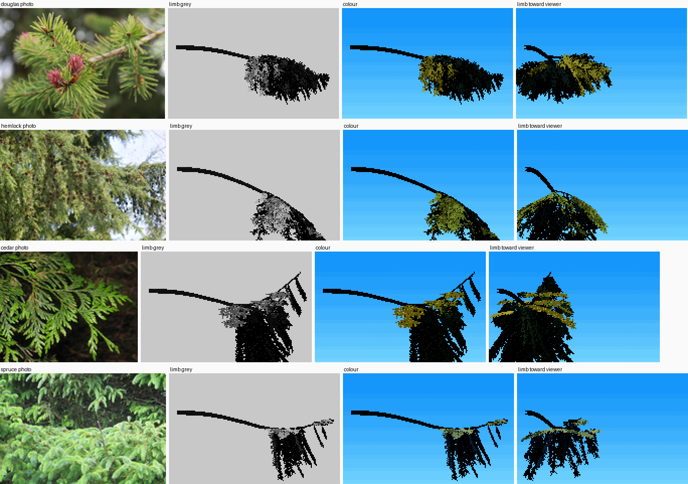
nb054. After the needle fill. Sprays have body.
The same failure came back from the other side at coarse scale. At 0.28 m/px an old tree's sprays are under a pixel wide, and the skeleton read as sticks again: "flags on poles" (sheet a1, below). I added a coarse-scale area fill that scatters points across the spray's width whenever the spray is sub-pixel. Today, running the final painter with the fill switched off (t4_fill), the difference is small. The flags were mostly cured later by larger elements and wider crowns. I'm leaving that sentence in because I claimed more for the fill in LESSONS than it deserves.
Two halves, and the note that fixed it

nb057. Young trees at 5 cm/px, colour, after a value plan and element coherence. Look at the right half of each tree.
By n6 I had two tools that stayed:
- A decided value plan.
lit_frac: the lit family's share of the foliage is set as a quantile of the direct light (0.42 for side light), not left to whatever the renderer produced. - Element coherence. At near scale each spray takes a single mixture draw, so sprays read as marks rather than per-pixel static.
But every tree was split down the trunk: sun-side half olive, far half black. The studio's second critic said it in round 1:
The light is a vertical split down the trunk... each tree reads as two flat halves, a cutout. Ferrari's V16 conifers are a dark mass lit by thin olive runs along the top edge and tips of each tier, strongest on the sun side but present, dimmer, across the whole crown.
The cause was one number. I'd weighted the crown's cone normal at wc = 0.5 against each spray's own normal. The cone normal is what makes a cone half-lit. The sprays' own normals face up: a spray lies flat along the top of its tier. Dropping wc to 0.18 lets the sprays speak, and light rides the tier tops on both sides of the stem.

nb079. The hemlock relit, wc 0.18. It's the same tree, and now the tiers carry the light.
Measuring it today, on the final painter: the lit share of foliage on the far side of the stem is 0.09 at wc = 0.5 and 0.15 at 0.18. Ferrari's C1 spire, measured the same way, has 0.36 on the sun side and 0.11 on the far side. The far side keeps about a third of the sun side's light, and so does mine now. (This measurement is from today, not that night. That night I only looked.)
4. Stage 2: ages, and the naturalist

nb058. Sheet a1, species × age. Mature and old trees are flags on poles, and the dead lower limbs are silver (my "dead wood" colour) and read as lightning.

nb060. Sheet a3, after the naturalist's numbers.
The changes from a1 to a3 were mostly other people's knowledge:
- mature height 46 m, old 68 m;
- old crowns 40% of the height;
- mature and old crowns 1.2–1.25× wider;
- the Douglas-fir crown ratio down to 0.55;
- bark colours from the guide's hexes (ridges #4a3e36–#5f5249, cedar #7a4b35);
- dead lower limbs dark, like any limb in shade, not silver;
- dead spike tops never thinner than ~1.5 px, so they read.
At this point the critic wrote the sentence I was working for: "Hemlock mature/old (drooping tiers, the leaning top) and cedar old (flared, fluted red base, upturned candelabra tips) are recognisably those trees, not generic 'conifer'."
What stayed weak:
- Saplings straggle.
- Young Douglas-fir read as a cypress cloud, because brush tufts all round every twig make a round, soft mass. I cut the brush and added flatter fronds.
- Old hemlock drooped toward weeping willow. Droop came down from 0.45 to 0.32.
5. Stage 3: one tree at every distance

nb063. A mature hemlock from 0.06 to 4 m/px at native pixels.
My first ladder cropped the trees because I'd sized every frame as 75/m pixels tall, a guess, not the tree's height. After fixing that, the question was whether the ladder pops: whether any consecutive pair jumps in character. What made it hold:
- The geometry is the same tree at every scale. Only the sampling changes: point spacing is 0.45 px, element anchors are at least 0.5 px apart, and the fill switches from needles to area when
step > 2 × needle. - Handoffs are continuous functions of
mpp, never branches. Stroke length ismark_m / mppclipped to 1–4 px. Element coherence rises with distance. Past about 0.1 m/px, branch coherence takes over: the whole branch shares one mixture draw, so its top edge is one lit run, "one lit flank per spire plus a few tier-edge ticks". - The value plan is the same at every scale, so the tree doesn't brighten or darken as it shrinks.
The critic found no pops in the final zoom strips, and each species kept its silhouette down to 0.8 m/px. At 2–4 m/px a mature tree is still a spire with a lit flank and a trunk. It isn't as crisp as Ferrari's far spires, which are 1 px with alternating spur ticks.
6. Stage 4: stands, and 23 seconds per tree
My first stand, 24 trees at 0.3 m/px, took 125 seconds:

nb065. The first stand. The haze turns 60 m of forest into what looks like 5 km. The front cedar is lovely.
The profiler said one old spruce took 23 seconds, and 90% of it was 24,000 Python calls to _element, each doing a dozen small numpy operations. I tried to hand the vectorization to a helper agent, but the studio's agent limit was full, so I did it myself: foliage_fast.py. It gathers every anchor of every branch first, then generates each element kind for all elements at once, with ragged-array indexing:
def _ragged(n):
"""element index and local index for ragged lengths n."""
n = np.asarray(n, int)
e = np.repeat(np.arange(len(n)), n)
start = np.cumsum(n) - n
k = np.arange(n.sum()) - start[e]
return e, k
The check was old beside new for all four species at two scales, with point counts: 734,779 against 746,732 for the mature Douglas-fir. Spruce went from 28.7 s to 1.2 s; the others were 10–25× faster.

nb066. Old (left) and new (right) foliage for all four species at two scales. I looked for differences in character and found none.
The test script failed first with ModuleNotFoundError: No module named 'grow', because I'd put it in tmp/ and Python looks for imports in the script's own folder. PYTHONPATH=. fixed it.
The haze was a units error. My aerial-perspective depth was z / 300 m. Realistic haze needs about 2 km, so far became 2000 m and the ground uses 4000 m. Today, looking at the two side by side (t5_depth, in the tutorial), I think the 300 m version is the more painterly picture: a Ferrari ghost ladder, which the critic praised in st1. It's physically wrong. I'd keep it as a knob, not a bug.
Two more things made the stand one picture instead of 24 sprites:
- A shared shadow map. One opacity shadow map is built from every tree's foliage, so trees shade each other and the forest interior goes dark on its own.
- One value plan for the stand. The lit threshold is a quantile over all trees together. A per-tree quantile had lit every tree equally, including the ones standing in their neighbours' shade.
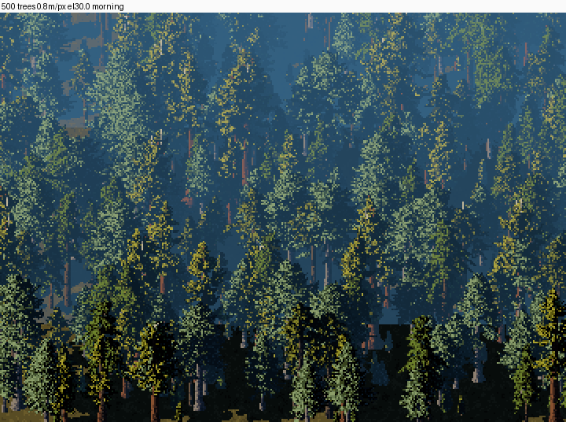
nb069. 500 trees, 0.8 m/px, 30° down. The critic said it reads as a PNW forest at 1× and is salt and pepper at 8×. Both are true.
The critic's round 3 on this image is the best description of my iso problem. Every crown is an even scatter of sage, yellow and navy pixels, "with no lit cap and no shadow side", where the aerial student measured one lit flank per crown with a lit share of 0.35–0.56. I didn't solve it; see the end.
7. Stage 5: the boles
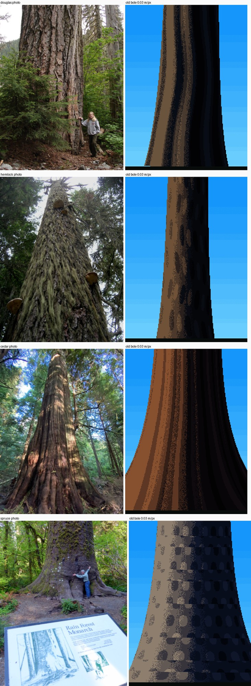
nb070. Old boles at 3 cm/px beside photos, first try. Only the silhouette has anything to do with the photos.
At 3 cm/px bark is the subject. What I tried:
- Voronoi first (
b2): a stretched Voronoi field in metres on the bole surface, cracks between the cells, a lit lip on each cell's upper edge. The Douglas-fir came out as giraffe skin. - Then ridges (
b6): wandering vertical stripes, a furrow on each stripe's right, a lit rim on its sun side, long blocks broken by short checks. The Douglas-fir became a corrugated pillar. That's better, but it's corrugation, not corky ridges.
In between I hit my favourite bug of the night. I named the bark parameter table BARK = {...}, and BARK was already the material constant 2. The painter wrote the dictionary into the material buffer:
TypeError: int() argument must be a string, a bytes-like object or a real number, not 'dict'
Renamed to BARK_T.
The stubborn one was dither. I'd used the stochastic foliage dither on bark, and every bole came out as sandpaper. SYNTHESIS says hard materials take ordered 2×2 dither; I switched to a Bayer matrix and narrowed it from 0.9 to 0.35 of a step. And the critic pointed out that old boles in a forest get strong bounce from the floor and the trunks around them, so I added a bounce term to the wood's ambient light.

nb083. The final boles. The cedar is the strong one. Douglas-fir is a corrugated pillar; the hemlock and spruce plates are too fine to read.
The cedar buttress worked, and I know why. The flutes are two things at once. They ripple the radius near the ground, R·(1 + a·cos³(n·θ)), and they tilt the normal by the radius's own slope, dR/dθ / R, so the valleys turn away from the light and the flute bands carry up into the flare. The ripple alone changes only the outline. The tutorial has the ablation.
8. Stage 6: light and hours, and the thin-light rounds
palette.py holds the light: eight states (dawn, morning, noon, golden, dusk, overcast, fog, moon). Each species gets an 8-step foliage ramp: shadow family 0–3, sky-lit, walking toward blue-black; lit family 4–7, sun-lit, walking from a warm brown-olive (Ferrari's (95,71,0)) up to the species' sunlit tip colour. Wood, ground and sky have their own ramps. The index canvas stores (material, step), so an hour is a ramp swap plus the sun's elevation. Overcast and fog have no sun family at all; the naturalist wrote that on westside overcast days "conifers read almost black-green", and that's what the ramps do.
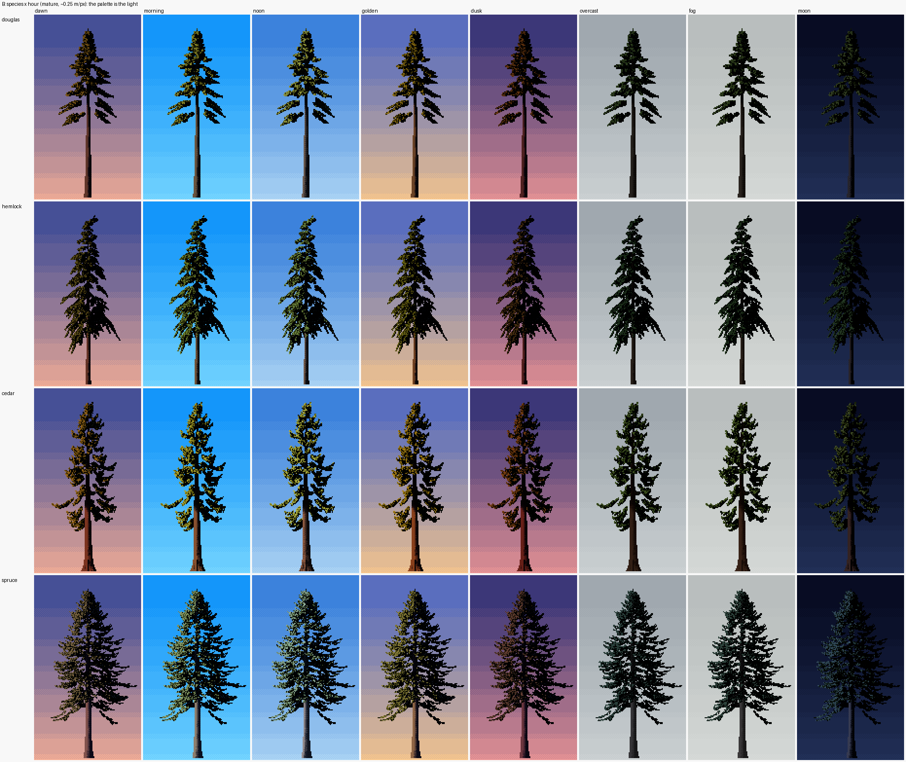
nb076. Species × hour.
The critic's rounds 4 and 5 went back to the texture at 8×, beside V16. The notes: my lights were broad olive patches several pixels deep; my shadow was pure black; his lights are thin 1-px runs along the tier edges, with two dark greens of texture below. Four changes, each a few lines in paint.quantize:
- Thin lights. Bright steps (6–7) survive only on a tier's top 1–2 px. That's where the pixel above is sky, another branch, or shadow. Inside the tier, light drops to dark olive.
- Dark texture. 30% of shadow-family pixels take one of two dark greens instead of black.
- Hanging strands. From lit tier-top pixels, 2–4 px vertical runs of dark olive drop into the tier.
- Vertical grain at near scale. The mixture's random field becomes columns of correlated noise, 1 px wide and a few px tall: SYNTHESIS's "grain grows with nearness".

nb087. Ferrari's near conifer, then three settings of mine. The column marked "coh0.3 vg2.5" is what I adopted.
This is where I got closest to him. It isn't him. His lit marks slant down and out along the needles, often in pairs; mine are still isotropic flecks. His darks are greener.
9. The sheets, and beside vox-trees
I rendered six sheets in background processes, four at a time (sheets.py); the full set took about 15 minutes. Sheet C, with the iso patches, was the slowest at 13 minutes. Twice I changed a painter parameter mid-render and had to kill and restart the lot.
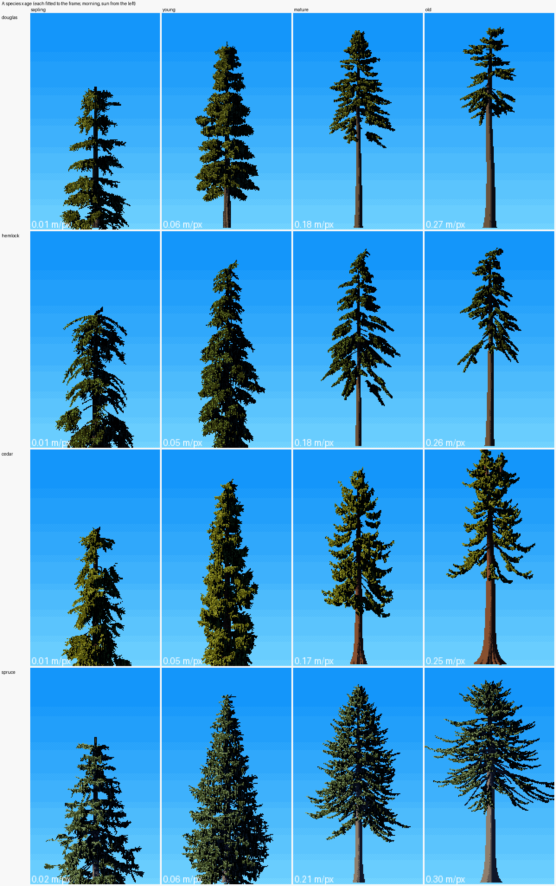
Sheet A: species × age, each fitted to the frame, scale printed.

nb074. vox-trees' spruce at its own sheet scale (0.42 m/px), and mine at the same scale.
At 0.42 m/px vox-trees reads better, honestly. It's a small, chunky, clean sprite with a strong ground shadow. Mine are thinner, lighter-edged spires. Where mine go past it: the four species are distinct, the ages are real (a 70 m old-growth tree is a different silhouette, not a scaled-up young one), and from 0.05 to 0.25 m/px the tier-top light and the hanging strands come from V16's grammar.
10. What didn't work, plainly
- The iso forest. At 1× it reads as dense westside forest. At 8× there are three faults:
- Crowns are grain, not one lit flank per spire. The fix I'd try is a per-crown lit cap from the crown normal:
wchigh at iso and low near. I've learned it's the same knob that broke the near view, turned the other way. - The haze is keyed to ground z rather than view distance, so it goes blue too fast. In sheet C it also came in ruled horizontal bands, which I dithered and didn't cure.
- Random species mixing makes confetti. Real stands come in patches, which is a placement question for the simulator.
- Bark. Douglas-fir is corrugated, not corky. Spruce and hemlock scales are too fine at 3 cm/px. There's no moss, and the Hoh boles are furred with it.
- Mid-distance trunks in the stand are ruled columns with no taper or stubs, and the stand stands on a ruled black line.
- Direction in the lit marks, as above.
What I'd tell the next tree student
- Count his pixels before you trust your eye. Class shares and run lengths took ten minutes to write and told me exactly why my copy was cut paper.
- Light the tier tops. It's one number (
wc), and it's the difference between a cutout and a conifer. - Read the naturalists first. Real heights and "the tip nods like a fishing rod" moved the trees more than any technique of mine.
- Scale is two failures, not one. Too close and a spray is a stick; too far and a spray is a stick again. Design the handoffs as continuous functions of metres per pixel.
- Compare against the existing trees at their own scale, and say where they win.